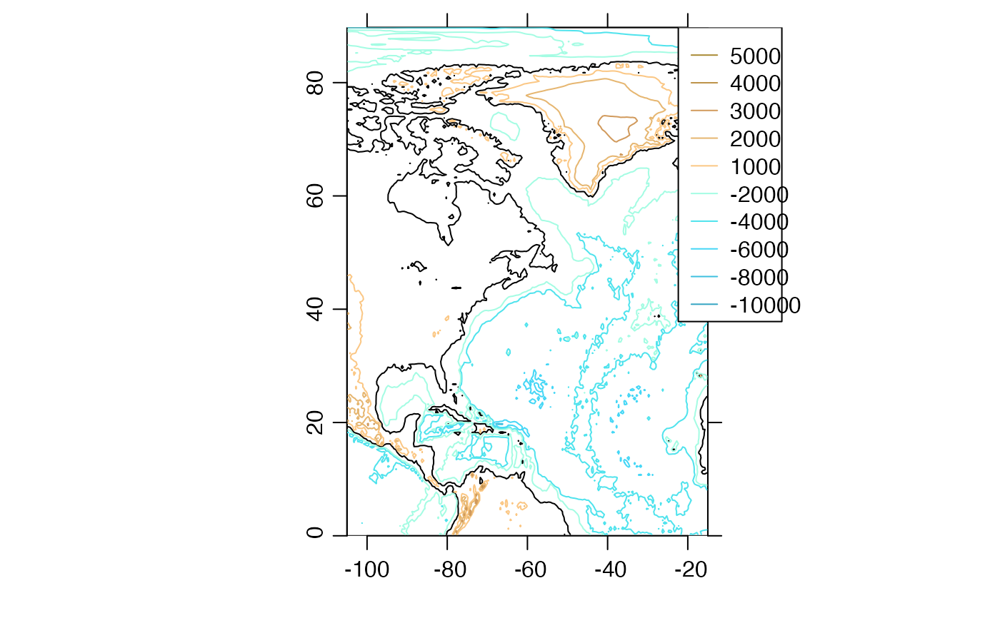

This plots contours of topographic elevation. The plot aspect ratio is set
based on the middle latitude in the plot. The line properties, such as
land.lwd, may either be a single item, or a vector; in the latter case,
the length must match the length of the corresponding properties, e.g.
land.z.
# S4 method for topo plot( x, xlab = "", ylab = "", asp, clongitude, clatitude, span, expand = 1.5, water.z, col.water, lty.water, lwd.water, land.z, col.land, lty.land, lwd.land, geographical = FALSE, location = "topright", mgp = getOption("oceMgp"), mar = c(mgp[1] + 1, mgp[1] + 1, 1, 1), debug = getOption("oceDebug"), ... )
| x | a topo object. |
|---|---|
| xlab, ylab | Character strings giving a label for the x and y axes. |
| asp | Aspect ratio for plot. The default is for |
| clongitude | Optional center longitude of map, in degrees east; see
|
| clatitude | Optional center latitude of map, in degrees north. If this
and |
| span | Optional suggested span of plot, in kilometers (must be supplied,
if |
| expand | Numerical factor for the expansion of plot limits, showing area
outside the plot, e.g. if showing a ship track as a coastline, and then an
actual coastline to show the ocean boundary. The value of |
| water.z | Depths at which to plot water contours. If not provided, these are inferred from the data. |
| col.water | Colors corresponding to |
| lty.water | Line type(s) for water contours. |
| lwd.water | Line width(s) for water contours. |
| land.z | Depths at which to plot land contours. If not provided, these
are inferred from the data. If set to |
| col.land | Colors corresponding to |
| lty.land | Line type(s) for land contours. |
| lwd.land | Line width(s) for land contours. |
| geographical | Logical, indicating whether to plot latitudes and longitudes without minus signs. |
| location | Location for a legend (or |
| mgp | 3-element numerical vector to use for |
| mar | Four-element numerical vector to be used with
|
| debug | Numerical value, with positive values indicating higher levels of debugging. |
| ... | Additional arguments passed on to plotting functions. |
Other functions that plot oce data:
download.amsr(),
plot,adp-method,
plot,adv-method,
plot,amsr-method,
plot,argo-method,
plot,bremen-method,
plot,cm-method,
plot,coastline-method,
plot,ctd-method,
plot,gps-method,
plot,ladp-method,
plot,landsat-method,
plot,lisst-method,
plot,lobo-method,
plot,met-method,
plot,odf-method,
plot,rsk-method,
plot,satellite-method,
plot,sealevel-method,
plot,section-method,
plot,tidem-method,
plot,windrose-method,
plot,xbt-method,
plotProfile(),
plotScan(),
plotTS(),
tidem-class
Other things related to topo data:
[[,topo-method,
[[<-,topo-method,
as.topo(),
download.topo(),
read.topo(),
subset,topo-method,
summary,topo-method,
topo-class,
topoInterpolate(),
topoWorld
Dan Kelley
